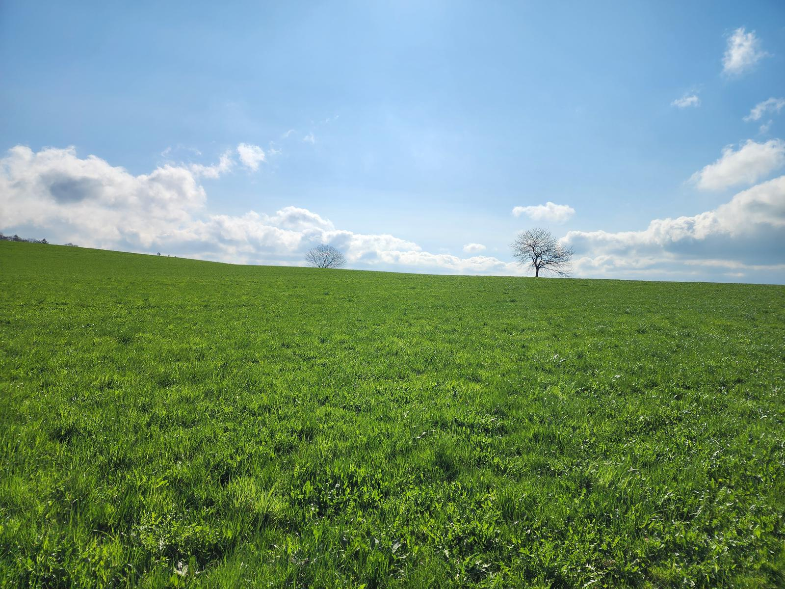
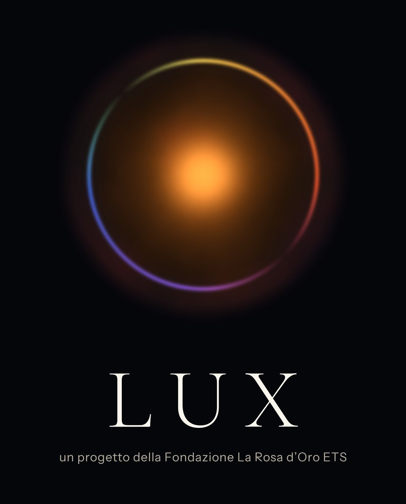
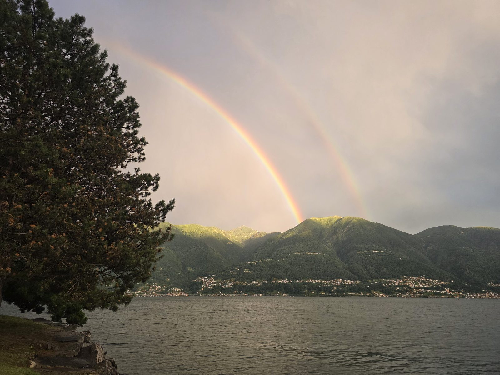

Qui trovi i progetti che raccolgono i fondi per realizzarsi e per continuare nel tempo. Per ognuno diciamo che cosa fa, di che cosa ha bisogno e come puoi sostenerlo: con una donazione, un fondo di memoria, un lascito o, per un’azienda, con una parte delle vendite o degli utili.
In questa pagina:
- La Via delle Erbe: una fattoria agrisociale dove coltivare con la biodinamica le piante medicinali d’Oriente e d’Occidente;
- Lux: per un uso più consapevole del digitale, dei social e dell’intelligenza artificiale, a ogni età;
- Il Ponte Arcobaleno: un’équipe di medico, terapeuti olistici e volontari che accompagna a casa propria chi si avvicina al fine vita.
La Via delle Erbe

Dall’alba al tramonto e dal tramonto a una nuova alba: dall’est all’ovest e ritorno.
Nelle medicine orientali si dice che l’essere umano è un riflesso dell’universo. Attraverso l’equilibrio degli elementi interni (i Cinque Elementi) e dei canali energetici (Nadi o Meridiani), l’uomo mantiene la salute e si connette più facilmente alla realizzazione del proprio dharma (missione di vita). Similmente, nella visione antroposofica occidentale, l’uomo è un essere in evoluzione, dotato di quattro corpi (Fisico, Eterico, Astrale e l’Io), con il compito di redimere la materia e trasformarla attraverso la coscienza e l’azione nel mondo fisico. Le piante sono la manifestazione terrestre delle forze dei pianeti e delle costellazioni. Nell’Antroposofia e nella Biodinamica, la Terra è considerata un grande organismo vivente, così come nelle antiche medicine tradizionali, un organismo che abbisogna di cure. Tale cura giunge dai preparati biodinamici: grazie allo studio e all’utilizzo consapevole degli stessi, si può facilitare la riconnessione delle piante, in particolare delle piante considerate medicinali, alle forze macrocosmiche (Solari, Lunari e Planetarie). Così, non solo si risveglia la vitalità del suolo, ma anche la qualità ed efficacia delle piante atte a curare l’uomo e i suoi squilibri, insieme a dei vegetali sani e ricchi di forze vitali (detto prana nelle medicine tradizionali). Si possono inoltre sfruttare gli effetti sinergici dei preparati sulla pianta, al fine di incrementare la sua virya (potenza legata a caldo/freddo), in altre parole portare le forze del pianeta caratterizzante il preparato ad influire sulla natura della pianta e dunque sulle sue capacità terapeutiche. La devozione che intesse in colui che coltiva influisce essa stessa sulla qualità della pianta, inserita in un organismo agricolo vivente.
La medicina integrata e preventiva è in crescita ed esige prodotti che crescano alle nostre latitudini in terreni sani. La necessità di coltivare piante medicinali biodinamiche viene dalla richiesta crescente di qualità che l’utente, sempre più informato e cosciente, fa. Recentemente, in Europa, ci siamo confrontati con la realtà che molti prodotti derivanti da piantagioni asiatiche sono inquinati e non certificati, o talora non disponibili per problematiche contingenti (per esempio nel periodo del covid).
Sintesi del progetto. Il presente progetto mira a stabilire un impianto agricolo specializzato nella coltivazione, raccolta e prima trasformazione di piante medicinali appartenenti a diverse tradizioni, tra cui Ayurveda, Medicina Cinese, Medicina Occidentale. L’obiettivo è creare una linea di rimedi, tisane e preparati fito-botanici di altissima qualità, combinando la sapienza millenaria dell’India e della Cina con l’approccio scientifico-spirituale della biodinamica europea. Contemporaneamente sarà possibile creare degli studi ai fini di ricerca, per comprendere ad esempio l’effetto di un preparato usato in modo ritmico sulla singola coltura/pianta (per esempio tulsi e preparato di ortica) per rafforzarne l’efficacia andando a stimolare e potenziare singoli aspetti e processi in essa.
Filosofia agricola e metodologia. Il punto di convergenza tra le due discipline si esprime nel profondo rispetto della pianta come organismo vivente connesso alle forze cosmiche e terrestri.
Verranno selezionate le specie di erbe medicamentose indiane e cinesi che hanno particolare richiesta di utilizzo ed efficacia in Occidente, così come piante occidentali. L’approccio agricolo sarà biodinamico con utilizzo esclusivo dei preparati biodinamici da cumulo (tarassaco, camomilla, ortica, valeriana, achillea) per vitalizzare il terreno. Le operazioni di semina, cura e raccolta seguiranno rigorosamente il calendario delle posizioni planetarie e delle costellazioni zodiacali.
Selezione delle specie specifiche. La coltivazione avverrà in lotti dedicati per rispettare le esigenze climatiche e la stagionalità delle diverse piante.
Sezione erbe:
- Tulsi (basilico santo): considerato un elisir di lunga vita, cardine delle miscele adattogene;
- Ashwagandha (Withania somnifera): coltivata per le radici, potente tonico del sistema nervoso;
- Bacopa monnieri (brahmi): pianta amante dell’umidità, utilizzata per sostenere le funzioni cognitive;
- Curcuma e zenzero: coltivati in strutture protette o microclimi caldi per i rizomi.
Sezione erbe antroposofiche (biodinamiche):
- Camomilla (Matricaria chamomilla): raccolta nel suo tempo balsamico mattutino per la sua segnatura solare;
- Tarassaco (Taraxacum officinale): essenziale per i preparati del suolo e la stimolazione delle funzioni epatiche;
- Achillea (Achillea millefolium): pianta legata ai processi dello zolfo e del potassio nel terreno e nell’organismo;
- Ortica (Urtica dioica): elemento di connessione e ferro, usata sia come rimedio che come concime liquido biodinamico;
- Calendula e iperico: piante solari per eccellenza, destinate alla produzione di oleoliti curativi;
- Elicriso: pianta legata a sole e fuoco, «cortison-like» e antiallergico, adatta per la pelle;
- Acoro calamo: tonico e neuroprotettivo, nella medicina tradizionale viene usato come tonico nervoso per contrastare la stanchezza mentale e migliorare la memoria;
- Altea officinalis: emolliente e lenitiva, aiuta l’apparato respiratorio;
- Salice bianco: aspirina naturale, antinfiammatorio e antipiretico;
- Menta acquatica: analgesico naturale, antisettico, azione carminativa e antispasmodica;
- Dong quai: detto ginseng femminile, regolatore ormonale, aiuta sintomi della menopausa;
- Primula della sera (enotera): sedativa e calmante, antinfiammatoria, utile per la pelle;
- Astragalo: aiuta sistema immunitario, immunostimolante, adattogeno e tonico;
- Rehmannia: antinfiammatoria e tonica renale;
- Ginkgo biloba: vasodilatatore periferico, microcircolatorio e neuroprotettivo;
- Giuggiolo: sedativo blando, ansiolitico e tonico digestivo.
Sezione bacche:
- Goji: antiossidante, protettivo oculare e tonico epatico;
- Schisandra: epatoprotettrice, adattogena e anti-stress, aiuta sistema riproduttivo maschile, stamina;
- Aronia: frutti con il più alto potere antiossidante al mondo, protettore cardiovascolare, immunostimolante.
La fattoria agrisociale. La Via delle Erbe nasce come futura fattoria agrisociale della Fondazione: un luogo dove la coltivazione delle piante medicinali si unisce all’accoglienza e al fare insieme.
L’agricoltura sociale usa le risorse dell’agricoltura, cioè la terra, le piante, gli animali e il lavoro delle stagioni, per includere e accompagnare le persone nella loro evoluzione. La legge italiana la riconosce dal 2015 (legge 141/2015, art. 2) e ne indica quattro strade: l’inserimento al lavoro di persone con disabilità o svantaggiate, di migranti e rifugiati e di ragazzi in percorsi di sostegno; servizi per la comunità che sviluppano abilità e inclusione; attività che affiancano le terapie mediche, psicologiche e riabilitative, anche attraverso la coltivazione delle piante; l’educazione ambientale e alimentare e le fattorie sociali e didattiche. Il Codice del Terzo settore la mette tra le attività di interesse generale.
Lo statuto della Fondazione la indica tra i suoi scopi (art. 3), accanto all’agricoltura biologica, biodinamica e rigenerativa per la tutela del paesaggio, della biodiversità e del suolo e per alimenti sani. Prevede laboratori agricoli in cui il lavoro manuale diventa strumento terapeutico e pedagogico, e la formazione nell’agricoltura e nell’agricoltura sociale.
Nella Fondazione alcuni membri lavorano nell’agricoltura sociale e ne conoscono per esperienza diretta il valore: chi ne prende parte impara un mestiere, trova un ritmo e una comunità, e al contempo la fattoria si apre al territorio e alla popolazione locale creando un ponte di collaborazione e aiuto.
Una fattoria di piante medicinali si presta bene a questo scopo: richiede cura, attenzione e molte mani, sia forti che delicate; segue le stagioni e offre compiti diversi, dalla semina alla raccolta, dall’essiccazione alla preparazione delle tisane. Accanto alla coltivazione possono nascere percorsi di lavoro, laboratori, attività didattiche e di formazione.
In quale modo e con quale ampiezza la fattoria agrisociale lavorerà dipenderà da te e dalla raccolta fondi dedicata, dall’azienda e dal terreno che si potranno acquistare e dalla loro dimensione. Non è inoltre escluso che la fattoria agrisociale possa vivere contemporaneamente in diversi appezzamenti in differenti luoghi, connessi.
La cifra la scegli tu, e la donazione va a questo progetto. Con un bonifico usa le coordinate della pagina Dona, con la causale «La Via delle Erbe».
Lux: abitare il digitale, riscoprire il reale

Lux è il progetto della Fondazione per educare ad un uso più consapevole del digitale (i social, i giochi, l’intelligenza artificiale).
È utile per le persone di ogni età, a cominciare dai più giovani, cui non si può negare l’accesso al digitale, ma si può facilitare un uso più sano e critico dello stesso. Tuttavia, a differenza di ciò che si pensa, la «pericolosità» e l’abuso del digitale non sono un tema esclusivamente adolescenziale: riguardano anche la fascia di età fra i 50 e gli 80 anni. Per questo desideriamo contribuire tramite corsi alla media literacy, ovvero la capacità di orientarsi tra servizi complessi, riconoscere le fake news ed evitare le truffe online (come il phishing bancario o i falsi messaggi), al fine di evitare quel divario di competenze (digital divide) che rende la realtà del virtuale non solo poco inclusiva, ma fonte di stress.
Con un gruppo di esperti del settore vorremmo aiutarti a formarti un’opinione consapevole sull’IA e sulle sue implicazioni sociali ed etiche, partendo dalla sua storia e dalla sua evoluzione, per formulare previsioni pertinenti sulla sua traiettoria futura. Inoltre, secondo le tue necessità, potrai avere informazioni su quanto oggi si sa nelle neuroscienze sulle implicazioni dell’IA per l’apprendimento e per le facoltà cognitive.
Crediamo che la tecnologia sia una risorsa preziosa, ma solo se bilanciata da esperienze autentiche: per questo il programma della Fondazione valorizza il lavoro manuale, la natura, i ritmi lenti e gli incontri reali.
Le donazioni a Lux confluiscono in un fondo della Fondazione con una contabilità separata, perché restino tracciabili. Chi dona accende una luce simbolica, senza premi, classifiche né inviti a donare di nuovo. Si dona dal sito dedicato, lux.larosadoro.org, dove trovi tutte le informazioni aggiuntive.
Se sei un esperto del settore (psicologo, docente universitario, informatico, formatore interessato al sociale), scrivici per un’eventuale collaborazione: siamo aperti a colloqui e interazioni.
Il Ponte Arcobaleno: accompagnamento al morire a casa propria

A chi si rivolge. Questo progetto è pensato per sostenere ed accompagnare persone che si stanno avvicinando al fine vita e che scelgono liberamente di vivere questo passaggio a casa propria.
Obiettivo. Fornire al paziente presso il suo domicilio un’équipe multidisciplinare per offrire aiuto nel fine vita, che comprenda un sostegno a corpo, anima e spirito. L’équipe è composta da un medico, da terapeuti olistici e da volontari formati, che si rendono disponibili ad andare a casa della persona che si trova nelle fasi terminali della malattia, a partire dai mesi o settimane precedenti e nel momento del passaggio. Il progetto prevede che la Fondazione si faccia carico dei costi dei professionisti.
In cosa consiste il sostegno offerto. Il gruppo si occupa dei bisogni esistenziali, emotivi e religiosi dei pazienti e delle loro famiglie, che affrontano la fase finale della vita. Tali équipe sostengono chiunque — credente o non credente — nel trovare pace, senso e una conclusione serena e degna del proprio percorso di vita.
Le équipe di assistenza spirituale adattano il proprio approccio ai valori personali di ogni individuo, concentrandosi sulla sofferenza fisica, emotiva, sociale e spirituale. Gli interventi più comuni includono:
- Aiutare i pazienti a condividere la propria storia, la biografia della propria vita, a riflettere su ciò che conferisce senso alla loro esistenza e a decidere come desiderano essere ricordati.
- Riconciliazione e ritorno alla serenità con l’ambiente: favorire conversazioni incentrate sulla risoluzione di questioni emotive rimaste in sospeso.
- Massaggi per dare conforto e favorire il lasciar andare (per esempio la ‘M’ Technique® o il trattamento alle mani dell’ayurveda).
- Rituali e pratiche di conforto, in particolare la meditazione, la mindfulness, la preghiera o la musicoterapia.
- Offrire consulenza alle famiglie in merito alle tradizioni da seguire dopo il decesso.
- Aiutare i pazienti a esprimere i propri valori ideali e spirituali, nonché pratici, anche con le DAT, affinché l’équipe medica e la famiglia possano orientare le decisioni relative al fine vita in coerenza con le convinzioni personali del paziente.
A differenza dell’assistenza spirituale in ospedale, l’assistenza spirituale domiciliare è integrata nel ritmo della vita quotidiana con:
- Visite domiciliari programmate. Un membro dell’équipe a rotazione o su esigenza si reca a casa del paziente con cadenza regolare (settimanale o bisettimanale) per stare con lui, ascoltarlo e offrirgli sostegno emotivo. O anche solo per leggergli un libro o una poesia.
- Supporto in situazioni di crisi e di transizione. Le équipe sono generalmente reperibili durante le fasi terminali della malattia o in caso di improvvisi peggioramenti delle condizioni di salute, per fornire conforto immediato, preghiere o una presenza discreta alla famiglia.
- Supporto e guida per chi si prende cura di un malato. Poiché chi assiste un familiare a casa spesso sperimenta un’intensa stanchezza e isolamento, gli specialisti dell’assistenza spirituale dedicano del tempo specifico a verificare la resilienza emotiva e spirituale della famiglia.
- Personalizzazione dello spazio del paziente — inserendo fotografie, oggetti e libri significativi, la sua musica preferita, profumi rilassanti, immagini sacre o colori adatti, e altri oggetti sacri, inclusa eventualmente la pulizia, al fine di creare un rifugio tranquillo e pulito tra le mura domestiche.
- Se necessario è possibile occuparsi della nutrizione del paziente dal punto di vista fisico, ma soprattutto animico-spirituale.
La cifra la scegli tu, e la donazione va a questo progetto. Con un bonifico usa le coordinate della pagina Dona, con la causale «Ponte Arcobaleno».
Vuoi offrire il tuo aiuto?
Il Ponte Arcobaleno sta cercando altre mani e altri cuori che collaborino. Sei un medico, un infermiere, un OSS o un terapeuta esperto nell’accompagnamento al fine vita, oppure desideri metterti in gioco come volontario? Raccontaci di te, scrivici. Se senti di voler acquisire gli strumenti giusti prima di iniziare, manda una mail a pontearcobaleno@larosadoro.org o consulta la pagina della formazione.
Hai bisogno di supporto?
Non restare solo. Se in questo momento sei tu ad aver bisogno di una presenza amica accanto, per te o per una persona cara, visita la pagina Io sono qui per te o manda una mail a pontearcobaleno@larosadoro.org.
In questa sezione verranno presentati progetti da sostenere, a mano a mano che saranno pronti. Intanto puoi sostenere la Fondazione e i suoi progetti dalla pagina Dona.